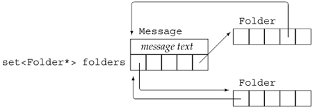

13.4. A Message-Handling ExampleAs an example of a class that needs to control copies in order to do some bookkeeping, we'll sketch out two classes that might be used in a mail-handling application. These classes, Message and Folder, represent, respectively, email (or other) messages and directories in which a message might appear. A given Message might appear in more than one Folder. We'll have save and remove operations on Message that save or remove that message in the specified Folder. Rather than putting a copy of each Message into each Folder, we'll have each Message hold a set of pointers to the Folders in which this Message appears. Each Folder will also store pointers to the Messages it contains. Figure 13.1 (p. 488) illustrates the data structure we'll implement. Figure 13.1. Message and Folder Class Design When we create a new Message, we will specify the contents of the message but no Folder. Calling save will put a Message in a Folder.
When we copy a Message, we'll copy both the contents of the original message and the set of Folder pointers. We must also add a pointer to this Message to each of the Folders that points to the original Message. Assigning one Message to another behaves similarly to copying a Message: After the assignment, the contents and set of Folders will be the same. We'll start by removing the existing left-hand message from the Folders it was in prior to the assignment. Once the old Message is gone, we'll copy the contents and set of Folders from the right-hand operand into the left. We'll also have to add a pointer to the left-hand Message to each Folder in this set. When we destroy a Message, we must update each Folder that points to the Message. Once the Message goes away, those pointers will be no good, so we must remove the pointer to this Message from each Folder in the Message's own set of Folder pointers. Looking at this list of operations, we can see that the destructor and the assignment operator share the work of removing messages from the list of Folders that had held a given Message. Similarly, the copy constructor and the assignment operator share the work of adding a Message to a given list of Folders. We'll define a pair of private utility functions to do these tasks. The Message ClassGiven this design, we can write a fair bit of our Message class:
class Message {
public:
// folders is initialized to the empty set automatically
Message(const std::string &str = ""):
contents (str) { }
// copy control: we must manage pointers to this Message
// from the Folders pointed to by folders
Message(const Message&);
Message& operator=(const Message&);
~Message();
// add/remove this Message from specified Folder's set of messages
void save (Folder&);
void remove(Folder&);
private:
std::string contents; // actual message text
std::set<Folder*> folders; // Folders that have this Message
// Utility functions used by copy constructor, assignment, and destructor:
// Add this Message to the Folders that point to the parameter
void put_Msg_in_Folders(const std::set<Folder*>&);
// remove this Message from every Folder in folders
void remove_Msg_from_Folders();
};
The class defines two data members: contents, which is a string that holds the actual message, and folders, which is a set of pointers to the Folders in which this Message appears. The constructor takes a single string parameter representing the contents of the message. The constructor stores a copy of the message in contents and (implicitly) initializes the set of Folders to the empty set. This constructor provides a default argument, which is the empty string, so it also serves as the Message default constructor. The utility functions provide the actions shared among the copy-control members. The put_Msg_in_Folders function adds a copy of its own Message to the Folders that point to the given Message. After this function completes, each Folder that points to the parameter will also point to this Message. This function will be used by both the copy constructor and the assignment operator. The remove_Msg_from_Folders function is used by the assignment operator and destructor. It removes the pointer to this Message from each of the Folders in the folders member. Copy Control for the Message ClassWhen we copy a Message, we have to add the newly created Message to each Folder that holds the Message from which we're copying. This work is beyond what the synthesized constructor would do for us, so we must define our own copy constructor:
Message::Message(const Message &m):
contents(m.contents), folders(m.folders)
{
// add this Message to each Folder that points to m
put_Msg_in_Folders(folders);
}
The copy constructor initializes the data members of the new object as copies of the members from the old. In addition to these initializationswhich the synthesized copy constructor would have done for uswe must also iterate through folders, adding this Message to each Folder in that set. The copy constructor uses the put_Msg_in_Folder function to do this work.
As with any other constructor, if we do not initialize a class member, then that member is initialized using the member's default constructor. Default initialization in a copy constructor does not use the member's copy constructor. The put_Msg_in_Folders Memberput_Msg_in_Folders iterates through the pointers in the folders member of the parameter rhs. These pointers denote each Folder that points to rhs. We need to add a pointer to this Message to each of those Folders. The function does this work by looping through rhs.folders, calling the Folder member named addMsg. That function will do whatever it takes to add a pointer to this Message to that Folder:
// add this Message to Folders that point to rhs
void Message::put_Msg_in_Folders(const set<Folder*> &rhs)
{
for(std::set<Folder*>::const_iterator beg = rhs.begin();
beg != rhs.end(); ++beg)
(*beg)->addMsg(this); // *beg points to a Folder
}
The only tricky part in this function is the call to addMsg:
(*beg)->addMsg(this); // *beg points to a Folder
That call starts with (*beg), which dereferences the iterator. Dereferencing the iterator yields a pointer to a Folder. The expression then applies the arrow operator to the Folder pointer in order to run the addMsg operation. We pass this, which points to the Message we want to add to the Folder. Message Assignment OperatorAssignment is more complicated than the copy constructor. Like the copy constructor, assignment must assign the contents and update folders to match that of the right-hand operand. It must also add this Message to each of the Folders that points to the rhs. We can use our put_Msg_in_Folders function to do this part of the assignment. Before copying from the rhs, we must first remove this Message from each of the Folders that currently point to it. We'll need to iterate through folders, removing the pointer to this Message from each Folder in folders. The function named remove_Msg_from_Folders will do this work. Given remove_Msg_from_Folders and put_Msg_in_Folders, which do the real work, the assignment operator itself is fairly simple:
Message& Message::operator=(const Message &rhs)
{
if (&rhs != this) {
remove_Msg_from_Folders(); // update existing Folders
contents = rhs.contents; // copy contents from rhs
folders = rhs.folders; // copy Folder pointers from rhs
// add this Message to each Folder in rhs
put_Msg_in_Folders(rhs.folders);
}
return *this;
}
The assignment operator starts by checking that the left- and right-hand operands are not the same. We do this check for reasons that will become apparent as we walk through the rest of the function. Assuming that the operands are different objects, we call remove_Msg_from_Folders to remove this Message from each of the Folders in the folders member. Once that work is done, we have to assign the contents and folders members from the right-hand operand to this object. Finally, we call put_Msg_in_Folders to add a pointer to this Message in each of the Folders that also point to rhs. Now that we've seen work that remove_Msg_from_Folders does, we can see why we start the assignment operator by checking that the objects are different. Assignment involves obliterating the left-hand operand. Once the members of the left-hand operand are destroyed, those in the right-hand operand are assigned to the corresponding left-hand members. If the objects were the same, then destroying the left-hand members would also destroy the right-hand members!
The remove_Msg_from_Folders MemberThe implementation of the remove_Msg_from_Folders function is similar to that of put_Msg_in_Folders, except that this time we'll call remMsg to remove this Message from each Folder pointed to by folders:
// remove this Message from corresponding Folders
void Message::remove_Msg_from_Folders()
{
// remove this message from corresponding folders
for(std::set<Folder*>::const_iterator beg =
folders.begin (); beg != folders.end (); ++beg)
(*beg)->remMsg(this); // *beg points to a Folder
}
The Message DestructorThe remaining copy-control function that we must implement is the destructor:
Message::~Message()
{
remove_Msg_from_Folders();
}
Given the remove_Msg_from_Folders function, writing the destructor is trivial. We call that function to clean up folders. The system automatically invokes the string destructor to free contents and the set destructor to clean up the memory used to hold the folders member. Thus, the only work for the Message destructor is to call remove_Msg_from_Folders.
|